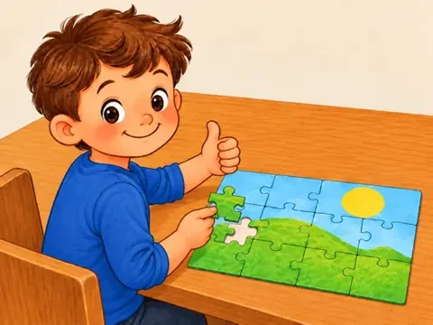
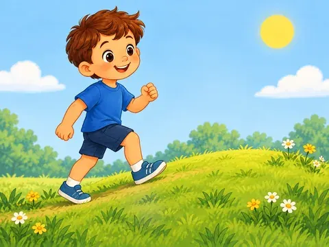
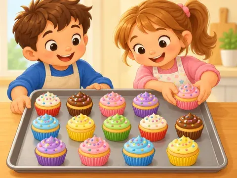
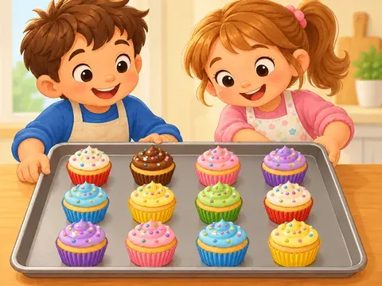
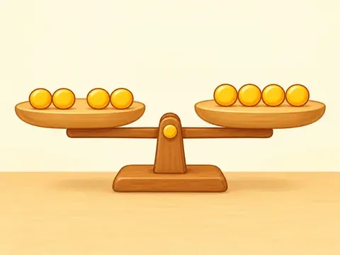
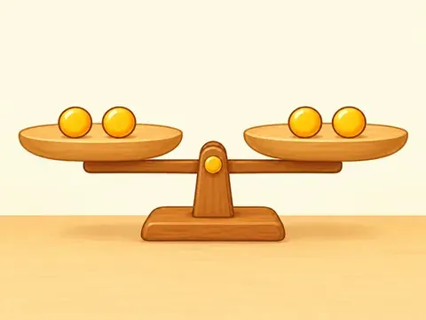
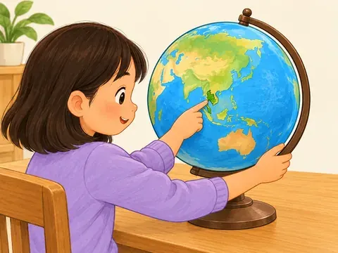
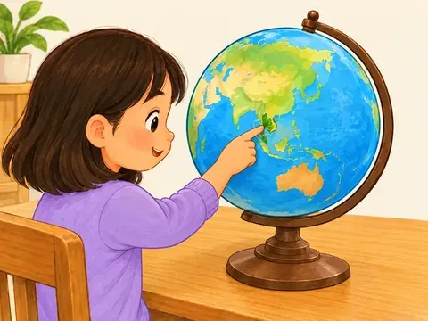
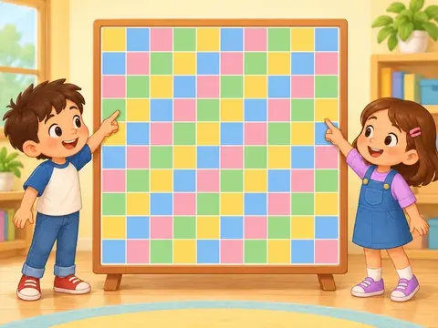
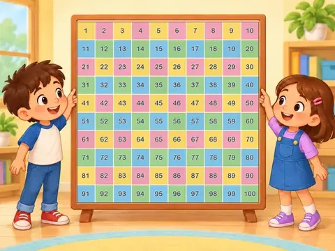

Word Book — what changed today (6 Oct)
Every Word Book fix from today, before and after. All of these are already in the Word Book: Next card.
B. Word Book Next (8 items)
B1easy
You flagged: Needed a new, clearer sentence and picture.
What changed: New sentence "This little hill is easy to climb.", new picture, new sentence clip.

Before
AfterB2eleven
You flagged: Count was wrong.
What changed: Now shows 11 ducks.
B3twelve
You flagged: Count was wrong.
What changed: Now shows 12 cupcakes.

Before
AfterB4equals
You flagged: Count was wrong.
What changed: Now shows 2 = 2.

Before
AfterB5globe
You flagged: Hand was wrong.
What changed: Globe now shows one arm pointing at Thailand.

Before
AfterB6hundred
You flagged: Needed a proper chart.
What changed: Exact numbered 10 x 10 chart; hands now drawn over the chart frame.

Before
AfterB7A-H voice picks: 47 words now use your v4 choice
You flagged: Your Now-vs-v4 picks for A to H.
What changed: 47 words now use the clip you chose. Sample of 8 below.
B7New voice clips (no before)
What is new: 30 word clips and 42 sentence clips rendered today. Items marked in yellow are ones the recogniser doubted: listen closely.
A
B
bandage The nurse wraps a bandage around my knee.
barn The farmer keeps hay in the barn.
beat I tap my foot to the beat.
beautiful The princess grows beautiful flowers outside her castle.
beginning The runners line up at the beginning of the race.
bell The bell rings at the end of playtime.
blackboard The teacher writes our names on the blackboard.
blood Mum gently wipes the blood from my scraped knee.
board game We play a board game on rainy days.
bookmark I put my bookmark between the pages.
born Vanilla was born on a rainy morning.
bounce I bounce the ball on the driveway.Recogniser heard the sentence as "bounced".
branch A bird sits on the lowest branch.
breakfast We eat breakfast before school.
bunny My bunny hops across the garden.
but The box looks big, but it is light.
C
candle We light a candle on the birthday cake.
celebration The class has a celebration after the school fair.
christmas Grandma visits us every Christmas morning.
cloudy The sky is cloudy before the rain.
D
F
H
L
M
P
Q
R
S
snowy It is snowy, so we build a snowman.Recogniser doubted this one.
sunny It is sunny at the seaside today.
T
V
W
X
Y